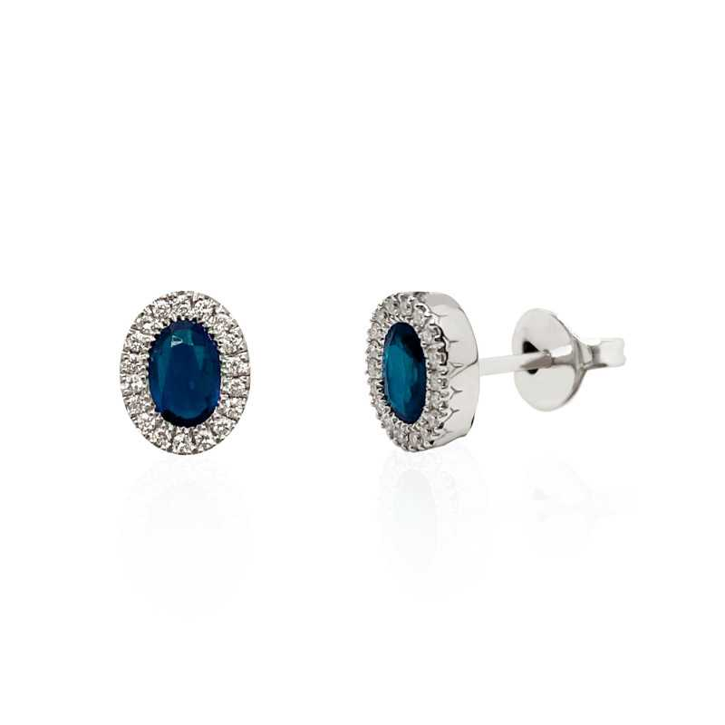

Pendientes de Zafiro
Ovales de zafiros centrales con almenas de diamantes en talla brillante que enmarcan las piedras azules zafiro.
Fabricados en oro blanco y diamantes talla brillante. Peso total diamantes 0.23 quilates y dos zafiros de peso total 1.32 quilates.
En Joyería Vera, nos enorgullece ofrecer joyas de alta calidad con diseños únicos, y estos pendientes de zafiro no son una excepción. ¡Ordene los suyos hoy y luzca radiante en cualquier evento especial!
Precio: 1.960,00 €